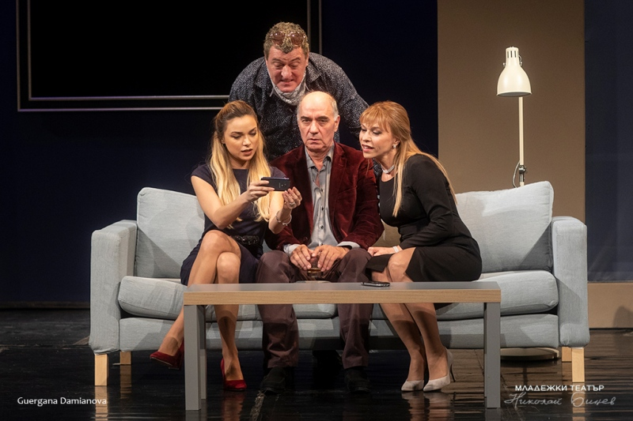

244-ти Традиционен пролетен панаир ще се проведе в Търговище в периода от 8 до 14 май 2023 г.
Традиционният пролетен панаир е най-значимият форум в региона, събиращ бизнеса на Търговище и България на едно място. Търговци и производители от цялата страна излагат своите стоки в изложбените зали на Художествена галерия "Никола Маринов", обменят опит и идеи.
В рамките на седмицата на панаира се организира и богата съпътстваща програма, като сред най-очакваните събития са концертите от #МузикаленПаркФест. Той се провежда на сцената до езерото в парка "Борово око" и събира изпълнители от различни жанрове във всеки от дните на панаира.
В Алеята на занаятите се провеждат демонстрации на традиционни занаяти, детски работилници и кулинарни изложби. През 2023 г. там се планира провеждането на Фермерски и занаятчийски пазар.
Театрални празници „Дни на големия театър в малкия град“ ще се проведат за 25-ти път в Търговище юни 2023 година. На сцената на Драматичния театър, ще бъдат представени четири от най-добрите театрални постановки, играни до момента.
 Международен фестивал на спектакли за деца „Вълшебната завеса“ е своеобразен продължител на идеите на Националните прегледи на детско – юношеската драматургия и театър, които ежегодно са се провеждали на територията на град Търговище в годините преди 1989-та.
Целта на фестивала е да запознае младите зрители на територията на областта с едни от най – добрите образци на театралното изкуство, насочено към техните радости, мечти и тревоги, както от български, така и от чуждестранни трупи, и същевременно да стимулира откриването и развитието на драматургия, засягаща актуалните проблеми на подрастващите в тийнейджърска възраст.
Това е мероприятие с цел популяризиране и съхранавяне на българския танцов фолклор. През 2023 г. клуб „Джумалийци” гр. Търговище ще проведе12-то издание на надиграването.